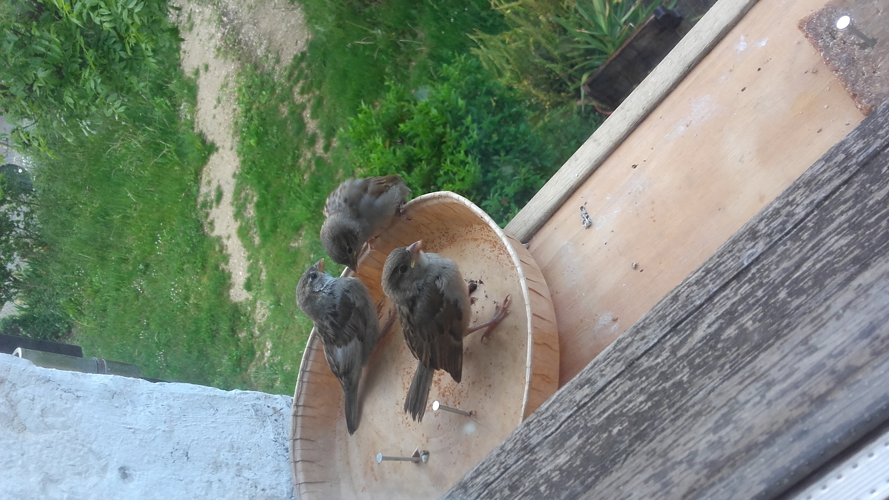
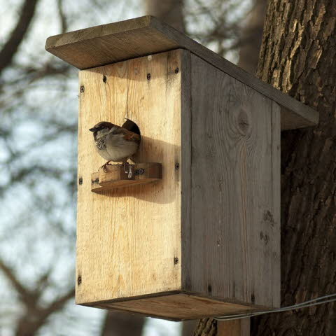
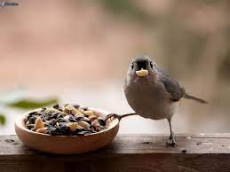

Habillage image avec du texte

Le moineau domestique est l’un des hôtes de nos jardins les plus connus.
Cette espèce ne se porte toutefois pas très bien car elle est en forte
régression depuis plusieurs décennies. Que pouvez-vous faire pour le
moineau dans votre jardin ? Comment reconnaître le moineau domestique ?
Notre moineau domestique est un petit oiseau brun. Les mâles ont une
calotte grise avec des côtés châtain, de joues grisâtres et un bec
conique noir (en été). Leur col noir se prolonge en bavette. Les
femelles ont un plumage brun plus uniforme et une bande sourcilière
claire. Le moineau domestique recherche l’interaction avec l’homme et
vit surtout à proximité des habitations, tant à la campagne qu’à la
ville.

De quoi le moineau domestique se nourrit-il ?
Le moineau domestique mange principalement des graines et surtout des
graines de plantes cultivées : froment, orge, avoine, millet et maïs.

Les graines de graminées, joncs, chénopodes et mûres figurent aussi à
son menu, agrémentées d’une large offre de restes de table. Le moineau
mange principalement au sol. Il nourrit essentiellement ses petits avec
des insectes (pucerons).